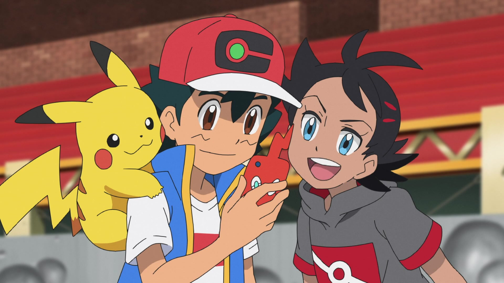
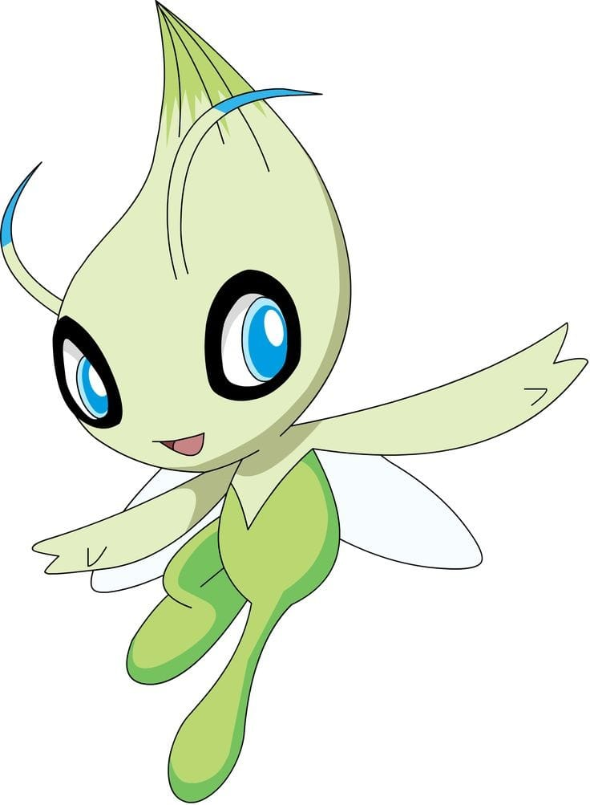

Pokémon (ポケモン Pokemon?), abreviando su nombre original Pocket Monsters (ポケットモンスター Poketto Monsutā?,
Monstruos de bolsillo), es un anime metaserial creado por Satoshi Tajiri, Junichi Masuda y Ken Sugimori, que
narra la historia de Ash Ketchum, un joven entrenador Pokémon de Pueblo Paleta que comienza un viaje para alcanzar
su sueño, ser un Maestro Pokémon. La serie está basada en la saga de videojuegos de Pokémon también creada por Satoshi Tajiri,
desarrollada por Game Freak y distribuida por Nintendo,
que aparecieron por primera vez en el mercado japonés el 27 de febrero de 1996.
Acción
Aventura
Comedia
Fantasía
Charizard
Jigglypuff
Squirtle
Pikachu

Argumento
Ash Ketchum es un muchacho entusiasta a quien le gustan los Pokémon y las batallas. Su gran pasión por los Pokémon lo ha llevado a proponerse el objetivo de convertirse en Maestro
Pokémon, el más alto grado de entrenamiento Pokémon, motivo por el cual comienza un viaje en búsqueda de este título. Al cumplir 10 años, Ash tiene la oportunidad de recibir su Pokémon
inicial por parte del Profesor Oak. Desafortunadamente, se quedó dormido una noche antes de su primer día de viaje y para cuando llegó al laboratorio del profesor, todos los Pokémon
iniciales (Bulbasaur, Charmander y Squirtle) ya habían sido elegidos por otros entrenadores. Su insistencia por tener un Pokémon, le permitió recibir como su Pokémon inicial un Pikachu
terco al que no le gusta entrar en la Pokébola/Poké Ball. Durante su recorrido por el bosque, por novatadas e intentos frustrados para capturar un Pokémon, Ash y Pikachu son atacados por
una bandada salvaje de Spearow. Para escapar de los Pokémon voladores, Ash decide sumergirse a un río para no ser visto. Al otro lado del río, una chica llamada Misty (que más tarde sigue
a Ash en su viaje con el pretexto de que le pague su bicicleta) estaba pescando Pokémon acuáticos con su caña y por error captura a Ash y su Pikachu malherido que estaban sumergidos en el agua.
Al observar que la manada de Spearow seguía tras ellos, Ash toma la bicicleta de Misty para dirigirse al Centro Pokémon y así poder curar a Pikachu pero al no poder huir a pesar de viajar en
bicicleta, Ash se puso a sí mismo en peligro por defender a Pikachu. Por medio de estas demostraciones de respeto y compromiso incondicional a su Pokémon, Pikachu comenzó a sentir aprecio por
Ash y su amistad se formó. Poco después en el Centro Pokémon, en una confrontación contra el Equipo/Team Rocket en donde se demostró que el gran poder de Pikachu sobrepasaba el poder de su evolución,
el Equipo/Team Rocket constantemente intenta capturar al Pokémon para Giovanni, jefe de la organización. Al llegar a la Ciudad Plateada tras pasar el Bosque Verde, Ash decide participar en la Liga Pokémon.
Para comenzar su travesía de recolección de medallas de gimnasio por toda la región Kanto, Brock es el primer líder de gimnasio que es desafiado por Ash a una batalla oficial. Sin embargo, al no
poder vencer a Brock, Ash decide ir a otro gimnasio. Poco después Brock entrega a Ash su primera medalla de gimnasio y deja su cargo de líder de gimnasio para viajar junto con Ash y cumplir su s
ueño de ser un Criador Pokémon. Desde ese día, Ash viaja por todo Kanto recolectando medallas de gimnasio en compañía de Misty y Brock
. Después de conseguir las 8 medallas de los gimnasios de Kanto, Ash participa en el torneo de la Liga Pokémon en donde queda entre los 16 mejores entrenadores de la competencia.
Ash Ketchum es un muchacho entusiasta a quien le gustan los Pokémon y las batallas. Su gran pasión por los Pokémon lo ha llevado a proponerse el objetivo de convertirse en Maestro Pokémon, el más alto grado de entrenamiento Pokémon,
motivo por el cual comienza un viaje en búsqueda de este título. Al cumplir 10 años, Ash tiene la oportunidad de recibir su Pokémon inicial por parte del Profesor Oak. Desafortunadamente, se quedó dormido una noche antes de su primer
día de viaje y para cuando llegó al laboratorio del profesor, todos los Pokémon iniciales (Bulbasaur, Charmander y Squirtle) ya habían sido elegidos por otros entrenadores. Su insistencia por tener un Pokémon, le permitió recibir
como su Pokémon inicial un Pikachu terco al que no le gusta entrar en la Pokébola/Poké Ball. Durante su recorrido por el bosque, por novatadas e intentos frustrados para capturar un Pokémon, Ash y Pikachu son atacados por una bandada
salvaje de Spearow. Para escapar de los Pokémon voladores, Ash decide sumergirse a un río para no ser visto. Al otro lado del río, una chica llamada Misty (que más tarde sigue a Ash en su viaje con el pretexto de que le pague su bicicleta)
estaba pescando Pokémon acuáticos con su caña y por error captura a Ash y su Pikachu malherido que estaban sumergidos en el agua. Al observar que la manada de Spearow seguía tras ellos, Ash toma la bicicleta de Misty para dirigirse al Centro
Pokémon y así poder curar a Pikachu pero al no poder huir a pesar de viajar en bicicleta, Ash se puso a sí mismo en peligro por defender a Pikachu. Por medio de estas demostraciones de respeto y compromiso incondicional a su Pokémon, Pikachu
comenzó a sentir aprecio por Ash y su amistad se formó. Poco después en el Centro Pokémon, en una confrontación contra el Equipo/Team Rocket en donde se demostró que el gran poder de Pikachu sobrepasaba el poder de su evolución, el Equipo/Team
Rocket constantemente intenta capturar al Pokémon para Giovanni, jefe de la organización. Al llegar a la Ciudad Plateada tras pasar el Bosque Verde, Ash decide participar en la Liga Pokémon. Para comenzar su travesía de recolección de medallas
de gimnasio por toda la región Kanto, Brock es el primer líder de gimnasio que es desafiado por Ash a una batalla oficial. Sin embargo, al no poder vencer a Brock, Ash decide ir a otro gimnasio. Poco después Brock entrega a Ash su primera medalla
de gimnasio y deja su cargo de líder de gimnasio para viajar junto con Ash y cumplir su sueño de ser un Criador Pokémon. Desde ese día, Ash viaja por todo Kanto recolectando
medallas de gimnasio en compañía de Misty y Brock. Después de conseguir las 8 medallas de los gimnasios de Kanto, Ash participa en el torneo de la Liga Pokémon en donde queda entre los 16 mejores entrenadores de la competencia.
Al regresar a Pueblo Paleta luego de su participación en la Liga Índigo, Ash es enviado por el Profesor Oak a Isla Valencia del Archipiélago Naranja para cumplir con el encargo de recoger la Pokébola/Poké Ball GS que estaba bajo la custodia de la Profesora Ivy. Ash, Misty y Brock son engañados por el Equipo/Team Rocket que manejaban un dirigible que termina aterrizando bruscamente en la Isla Tangelo. Más tarde Brock decide separarse del grupo de Ash y Misty para quedarse en la Isla Tangelo a vivir junto a la Profesora Ivy por beneficio propio. Luego conocen a Tracey Sketchit y Ash conoce y decide participar en la Liga Pokémon de las Islas Naranja.
Después de haber viajado por todo el archipiélago de las Islas Naranja y haber quedado como campeón de la Liga Naranja, Ash se dirige a la región de Johto para participar en la Liga Pokémon de la Conferencia Plateada, en donde es derrotado por un entrenador, el cual usó un Pokémon de la región Hoenn, razón por la cual emprendió un nuevo viaje hacia esta última región. Misty tenía que cuidar el Gimnasio Pokémon de Ciudad Celeste de sus hermanas debido a la noticia sobre la ausencia de ellos por motivos de viaje, por ello se retiró del grupo, al igual que Brock, quien también se dirigió a su hogar para resolver algunos problemas familiares. Ash se tuvo que cambiar el atuendo que había usado durante mucho tiempo y salió solo con Pikachu a Hoenn.
En Hoenn, Ash conoce a May/Aura, de 10 años14 y su hermano menor Max, que se une a ella en su viaje. May/Aura, lo hace porque está emocionada por los Concursos Pokémon que se realizan en Hoenn y Kanto, mientras que Max se suma al grupo para ganar la experiencia que le permita algún día tener su propio Pokémon y convertirse en líder de gimnasio, como su padre Norman, el líder del Gimnasio Petalburg. Al haber resuelto sus problemas, Brock quien también cambió de atuendo, regresa con Ash y sus nuevos compañeros para seguir con su sueño de ser criador Pokémon. Tras haber participado en la Liga Pokémon de Hoenn en donde quedó entre los 8 mejores entrenadores, Ash regresa a Kanto donde más tarde se entera sobre la Batalla de la Frontera, siguiente competencia en donde Ash decide participar.
Luego de haber salido como triunfador en La Batalla de la Frontera/El frente de batalla17 May/Aura abandona el grupo para dirigirse a los concursos Pokémon de Johto mientras que su hermano menor Max regresa a Ciudad Petalburg. Ash se entera de una nueva región llamada Sinnoh, hacia donde emprende un nuevo viaje con Pikachu y Aipom. En Sinnoh, Ash nuevamente se reencuentra con Brock y conoce a Dawn/Maya, una nueva entrenadora que aspira a ser una gran coordinadora en los concursos, como ya lo fue su madre. Ash conoce a su arrogante rival llamado Paul, el cual prefiere capturar al Pokémon más fuerte dejando a los débiles libres. Luego Ash recolecta todas las medallas de gimnasio y compite en la Liga Sinnoh siendo eliminado en semifinales quedando entre los cuatro mejores. Brock y Dawn/Maya se separan de Ash. Brock decide convertirse en Doctor Pokémon y Dawn/Maya viaja a la región Hoenn para participar en los concursos y convertirse en Súper Coordinadora.
Más tarde, Ash llega a la región Unova/Teselia, allí conoce a Cilan/Millo, el conocedor Pokémon y a Iris, la entrenadora que quiere convertirse en Maestra Dragón. Tuvo participaciones de batalla con varios líderes de gimnasio y con el rival Dent, un entrenador y fotógrafo. Después de conseguir las medallas de gimnasio, entra a la Liga Unova/Teselia siendo eliminado quedando entre los ocho mejores. Luego se enfrenta al Equipo/Team Plasma, que tiene el objetivo alejar los Pokémon de los entrenadores. Dejando la región Unova/Teselia, Ash, Iris y Cilan/Millo recorren las Islas Decolora y al regresar a Kanto, Ash se despide de Iris y Cilan/Millo y viaja a la región Kalos.
La nueva aventura de Ash comienza en Ciudad Lumiose/Luminalia en la región Kalos, donde sigue su búsqueda para convertirse en Maestro Pokémon. Ash continúa en Kalos para conseguir las ocho medallas y poder participar en la Liga Kalos. En su viaje lo acompañan el líder Clemont/Lem de tipo eléctrico, su hermana Bonnie/Clem, y Serena, entrenadora Pokémon apasionada por el Gran Espectáculo Pokémon. Ella conocía a Ash en un Campamento del Profesor Oak al cual fueron cuando eran niños, de ahí que se genere una historia hacia el reencuentro. Por lo visto, siente algo especial por Ash, aunque él no la recuerda cuando le comenta sobre el campamento. Además, el Equipo/Team Rocket sigue tras los pasos del protagonista y Pikachu. También hace su aparición el Equipo/Team Flare, la cual tiene por objetivo hacerse con el poder del Pokémon legendario Zygarde. También hace su aparición el nuevo rival de Ash, que es Alain que posee una mega evolución y aparenta ser mucho mejor que Ash, aunque con su entrenamiento especial con su Greninja, que logra convertirse en Greninja Ash al crear un vínculo especial con su entrenador, logra ponerse a la altura del poder del Charizard de Alain.
La Vigésima temporada comienza con una nueva región llamada Alola un lugar tropical colorido y donde en sus gentes abunda la alegría. Ash comienza a ir a dar clases para aprender las nociones básicas de este mundo Pokémon, Ash se hace amigo de todos sus compañeros Lana/Nereida, Mallow/Lulú, Lillie/Lylia, Sophocles/Chris y Kiawe además de conocer a Profesor Kukui y al Profesor Gabriel Oak, en el anime hay unos cambios de lo más tangibles. No existen medallas, existen pruebas. Ni tampoco existen líderes, son capitanes y Kahunas, todo ello con un sentido muy elaborado de jerarquía en el cual cada uno tiene sus funciones en esta aventura Ash no va a estar solo ya que va a contar con numerosos principales que se hacen relevantes en la historia. Ash ya cuenta con cristales los cuales ya ha hecho uso de nuevos movimientos, los llamados movimientos Z. En un momento del anime como aniversario, Ash hace una visita por Kanto y se reencuentra con viejas caras conocidas que han conformado la primera temporada del anime de Pokémon, Ash y compañía combate contra el mal atravesando las dimensiones este escuadrón era el encargado de acabar con las Ultraentes. En la Batalla Royal, conoce a un enmascarado portador de un Incineroar que demostraba ser muy poderoso de todos los cuatro participantes fueron enmascarados. Kiawe, Ash y Sophocles/Chris quedaron fuera excepto Ash, fue entonces cuando pierde de un solo golpe por la evidente diferencia de etapa evolutiva el Litten de Ash. Litten despierta unos sentimientos de determinación que lo lleva a evolucionar a su segunda etapa Torracat. En la primera Liga Alola que se lleva a cabo en la Isla Manalo, se pone a prueba a los entrenadores en una Batalla Royal en el que participaron 100 personas en el que los últimos 16 entrenadores en pie estarán en las eliminatorias, así tomando la oportunidad de ser el primer campeón de la Liga Alola. En la final Ash vs el entrenador Gladion/Gladio, Ash, gana la Liga Alola, así convirtiéndose en el primer Campeón de Alola.
En la serie Viajes Pokémon, Ash encuentra a Lugia y después de la batalla decide montarlo, ahí se encuentra con un entrenador Goh, quien tiene el objetivo de atrapar a todos los Pokémon para llegar a Mew. Con Goh, se convierten en asistentes de investigación gracias al Profesor Cerise/Cerezo. Viajan en todas las regiones incluso Galar, donde conoce al Campeón Mundial llamado Leon/Lionel y tuvo una batalla con el fenómeno de Galar, Dynamax/Dinamax. Luego, Ash se inscribe a la Serie Mundial de Coronación para tener batallas contra otros entrenadores desde las clases Normal, Superior/Excelente, Ultra/Superior hasta Maestra, y finalmente tener una gran batalla con Leon/Lionel. A lo largo de la serie, Ash tuvo encuentros especiales con varios personajes del pasado: los profesores y los compañeros de la Escuela Pokémon en la región Alola (excepto Lillie/Lylia hasta el segundo encuentro después de encontrar a su padre); Mewtwo (de la primera película Mewtwo Contraataca y del capítulo especial Mewtwo Regresa); Iris, la Campeona de la Liga Unova/Teselia; Gary, el ex-rival que está bajo las misiones del proyecto de investigación denominado Proyecto Mew; Dawn/Maya con su compañero Piplup en la región Sinnoh; Cilan/Millo, el Conocedor/Sibarita Pokémon y líder de Gimnasio Striaton/Gres de Unova: y Tracey Sketchit, el Observador Pokémon quien trabaja como asistente del Profesor Oak. Goh participa en Proyecto Mew para ser un Buscador/Rastreador y encontrar a Mew. Ash derrota a Leon/Lionel en la ronda final de la Serie Mundial de Coronación: El Torneo de los Ocho Maestros y se convierte en Campeón Mundial Pokémon. Goh y otros miembros del Proyecto Mew viajan a la Isla Suprema para encontrar a Mew, lo logran y al final se disuelven temporalmente. Ash y Goh toman caminos separados y Chloe se convierte en una nueva asistente de investigación de su padre, el Profesor Cerise/Cerezo, junto a su Eevee, que es incapaz de evolucionar. Una teoría de su incapacidad es que duda sobre qué camino tomar. Ash encuentra a Latias herida y se hace amigo de ella, se encuentra con sus antiguos compañeros Misty y Brock quienes deciden acompañarlo hasta que Latias le muestra a Ash que Latios corre peligro por un Cazador Pokémon, y con la ayuda de sus compañeros lo derrotan. Ash se despide de Misty y Brock, regresa al Pueblo Paleta, y al final con su amigo Pikachu, siguen su viaje.
Pokémon Favorito

El Pokémon Celebi es mi favorito por varias razones:
1. Celebi tiene un diseño único y adorable, con su aspecto de hada y sus colores verde y rosa.
2. Lo considero un Pokémon especial y codiciado.
3. Su papel en la película: Celebi ha tenido un papel importante en la película ya que se muestra como un protector de la naturaleza y un ser bondadoso que vela por el equilibrio del mundo.
Pikachu es mi pokémon favorito ya que tiene una personalidad muy amable y tierna, es muy servicial y siempre estaba dispuesto a pelar las batallas sin importar que se encontrara cansado.